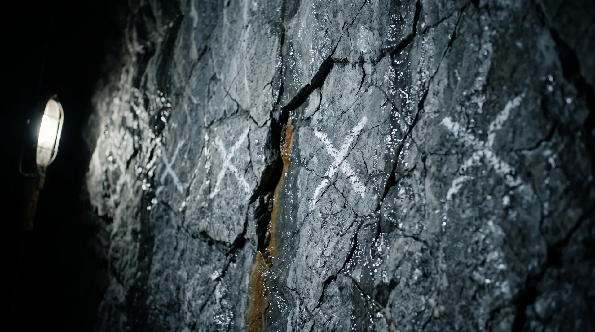
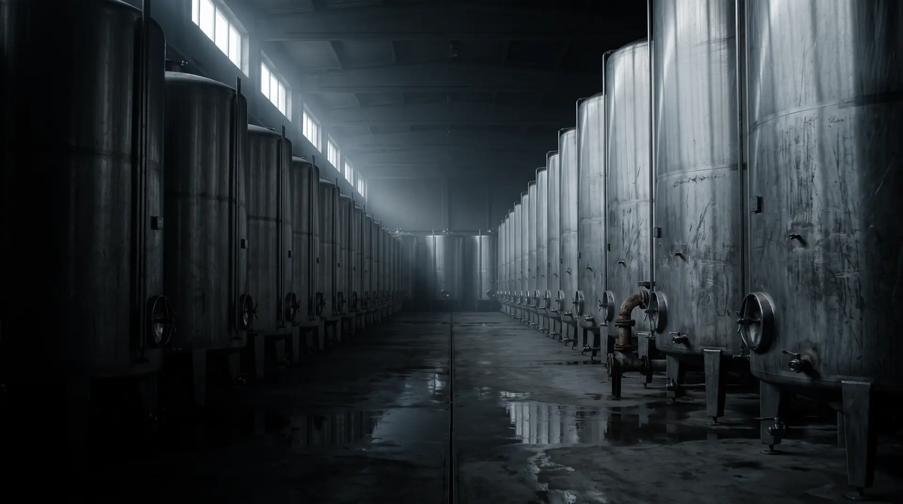
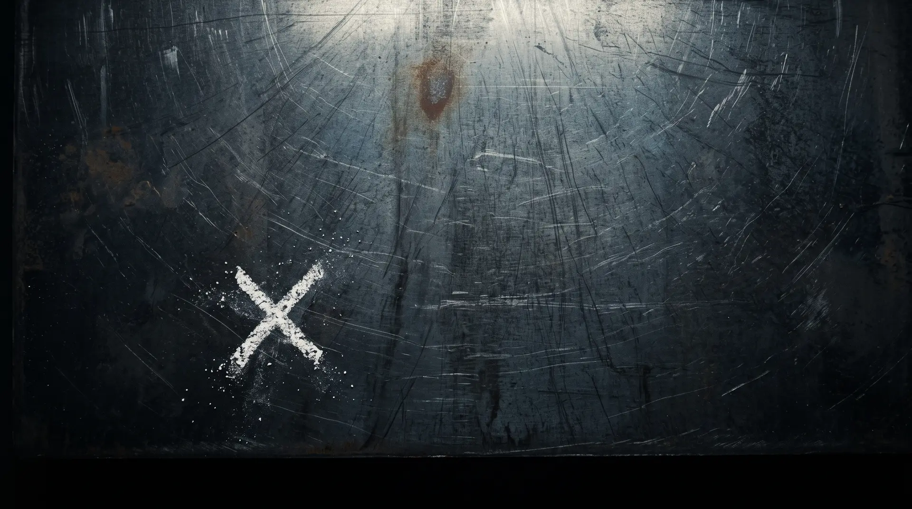

01 — LA HISTORIA
1920. La planta de Henry Ford llevaba semanas detenida. El generador principal había fallado y los mejores ingenieros del país no pudieron repararlo.
Llamaron a Charles Steinmetz. Miró la máquina dos días. Escuchó. Hizo una marca de tiza en un costado y dijo: abran aquí. Adentro estaba la falla.
La factura fue de $10.000. Ford pidió el detalle.
DETALLE DE FACTURA — 1920
Nos llamamos así por esa factura.

02 — EL PROBLEMA
Seis personas. Catorce semanas.
Una presentación.
Nada encendido.
La consultoría tradicional vende volumen: equipos grandes, meses de diagnóstico, un informe. Nosotros vendemos lo contrario — la intervención más pequeña que enciende el sistema.
Las planillas que tu gente llena a mano. Los informes que se arman copiando y pegando. Los datos que no cuadran entre dos áreas. Ahí es donde se hace la marca. Y lo que funciona, se escala.
03 — EL MÉTODO
-
01
Leemos la operación real, no la declarada. La evidencia sale del sistema, no de la entrevista.
-
02
Construimos el sistema que la corrige. IA donde aporta. Ninguna donde estorba.
-
03
Lo dejamos corriendo en producción, en manos de tu equipo. Encendido, o no existe.

04 — EL TRABAJO
No mostramos logos.
Mostramos sistemas encendidos.
Una de las grandes
cerveceras de Chile
Sistema de planificación y seguimiento de proyectos para el área de innovación, construido sobre las herramientas que el equipo ya usaba. Y un asistente de IA de escritorio — endurecido para entorno corporativo — desplegado dentro de su red, autenticado con sus cuentas, corriendo sobre su propia nube. Ningún dato sale de su perímetro.
Una empresa de
genética aplicada
Plataforma de auditoría y análisis de laboratorio — API, base de datos y frontend — corriendo en producción sobre Azure.
Referencias disponibles a solicitud. Cada proyecto se sigue en un portal privado con hitos, entregables y estado visibles para el cliente.
05 — QUIÉN ESTÁ DETRÁS
Steinmetz es la firma de Ian Berndt. Un solo responsable, de la primera conversación al sistema encendido. Los sistemas de la sección anterior los construyó él, dentro de las redes y bajo las reglas de seguridad de cada cliente.
ian@steinmetz.cl · +56 9 9321 5043 · Santiago de Chile

¿Dónde hacemos la marca?
Proyectos acotados, de semanas y no de trimestres, con precio cerrado antes de partir. La primera conversación son 30 minutos, sin costo y sin compromiso.